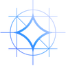
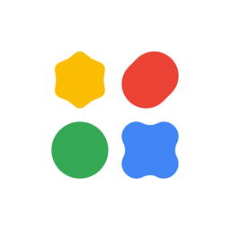
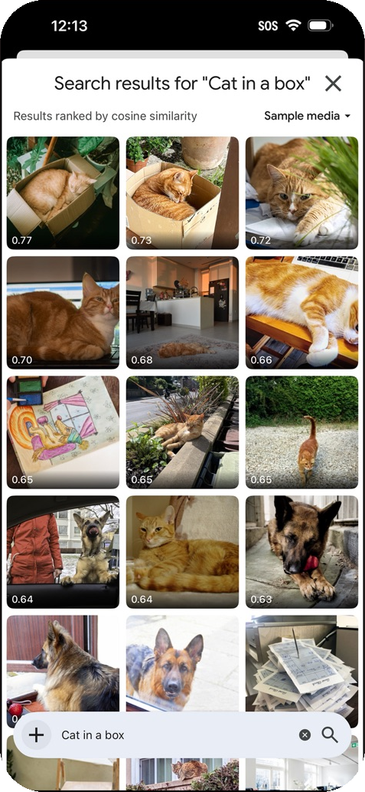
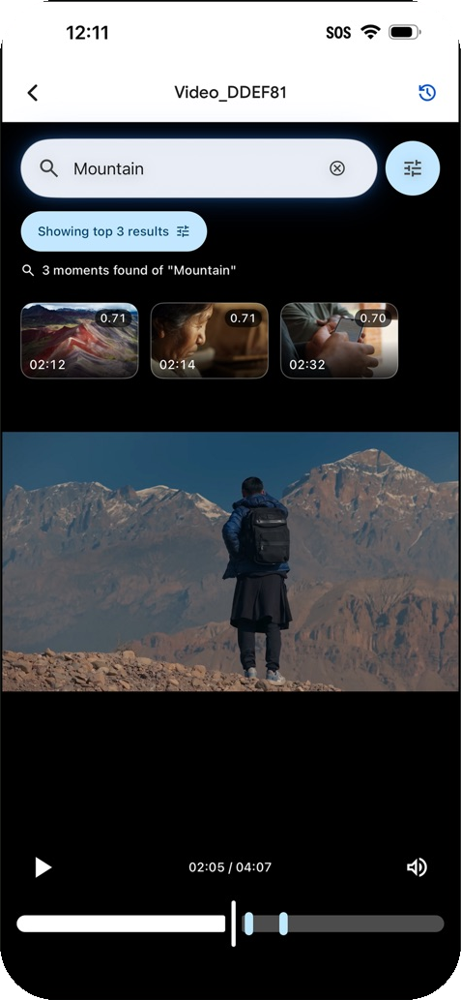

with EmbeddingGemma 2Search text, images, audio and video in one vector space

GemmaOpen · Apache 2.0740M paramsRuns locally
 Google Developer GroupBangkok · DevFest 2026
Google Developer GroupBangkok · DevFest 2026
Agenda
- 01Why multimodal RAG?Knowledge lives in slides, photos, calls and videos
- 02Meet EmbeddingGemma 2One vector space · modular encoders · Matryoshka
- 03Use it in Pythonsentence-transformers: text, image, audio, video
- 04Build the RAG pipelineIndex → retrieve → generate, with a worked example
- 05Tune & shipDesign choices, gotchas, Gemini Embedding 2
Why multimodal
RAG?
Your knowledge is not
only text
RAG = Retrieval-Augmented Generation
Find the right pieces first, then let the model answer from them
Answers use today's documents, not training data
Fewer made-up answers, and you can cite sources
Your data stays in your index
Text-only RAG is blind to most of your data
Extra models to run · charts, layout, tone and visuals get lost · errors stack up
Search a photo with words, a video with a question, a call with a sentence
What is an embedding?
A list of numbers that captures meaning. Similar meaning → nearby points.
model
[0.12, -0.48, 0.07, … ]768 numbersMeet
EmbeddingGemma 2
Open, small, multimodal
EmbeddingGemma 2at a glance
A local, multimodal embedding model that understands text, images, audio and video.
Every modality lands in the same space
Load only the encoders you need
Same weights, same vector space, four sizes
model.safetensors file, 1.49 GB, for every config. Fewer encoders = less memory, same download.LiteRT: generic .litertlm builds on Hugging Face (litert-community). No text + audio build.How each input is read
Images & documents
Photos, PDF pages, slides, charts. Choose a visual token budget per call:
More tokens = more detail (small text, charts) but slower
Video
MP4 file or URL, or your own frames. Sampled at 1 frame/s by default, up to 32 frames, with timestamps.
Audio
Raw speech or sound, read as 16 kHz mono. File, URL or array.
Text, code & mixed
Text uses a task prompt (SearchQuery / Document). Mix media inside text with placeholders:
Cut the vector short, keep most of the quality
The most important information sits at the front of the vector

Try EmbeddingGemma 2 in Google AI Edge Gallery

Use it in
Python
sentence-transformers,
a few lines per modality
Install and load
from sentence_transformers import SentenceTransformer
# Full model: all modalities (740M parameters)
MODEL_ID = "google/embeddinggemma-2"
model = SentenceTransformer(MODEL_ID)
print(model.device, model.dtype)
# cuda:0 torch.bfloat16
# Text only (270M parameters)
text_only_model = SentenceTransformer(
MODEL_ID,
config_kwargs={"vision_config": None,
"audio_config": None},
)
# Text, images, and video (440M parameters)
text_image_model = SentenceTransformer(
MODEL_ID,
config_kwargs={"audio_config": None},
)
Text: tell the model the task
query = "What causes the northern lights?"
document = ("The northern lights are caused by "
"charged particles from the sun...")
# Embed using `prompt_name`
query_emb = model.encode(query, prompt_name="SearchQuery")
doc_emb = model.encode(document, prompt_name="Document")
print(model.similarity(query_emb, doc_emb))
SearchQueryShort questions people type
DocumentThe text chunks you store in the index
Pass a dict like
{"image": path}Questions and answers look different. Prompts move both into the right place in the space, so they match.
One text query, a photo and a sound
# Cross-modal search: one text query against
# a photo and a sound recording
image_emb = model.encode({"image": "sunset_beach.jpg"})
audio_emb = model.encode({"audio": "ocean_waves.wav"})
query_emb = model.encode("ocean waves at sunset",
prompt_name="SearchQuery")
print(model.similarity(query_emb, image_emb))
print(model.similarity(query_emb, audio_emb))
# Higher detail for small text / charts
emb = model.encode(
{"image": "chart.png"},
processing_kwargs={"image": {"max_soft_tokens": 1120}},
)
Scores from the Google notebook
Each was the best match among its candidate texts
Video, and many media in one vector
emb_video = model.encode(
{"video": "grip_test.mp4"},
processing_kwargs={
"video": {
"max_frames": 16, # default 32
"fps": None, # None: all up to max_frames
"overflow_strategy": "uniform",
"add_timestamps": True,
}
},
)
# One embedding for a product listing
# with text, photo, and video
listing_emb = model.encode({
"text": "Waterproof trail shoe. <|image|> "
"Grip test on wet rock: <|video|>",
"image": "trail_shoe.jpg",
"video": "grip_test.mp4",
})
query_emb = model.encode("waterproof trail shoes",
prompt_name="SearchQuery")
print(model.similarity(query_emb, listing_emb))
Build the RAG
pipeline
Index → retrieve → generate
Multimodal RAG, end to end
long video → short clips
Documentmedia: no prompt
SearchQueryCloud: Gemini
Embed the corpus
from pathlib import Path
import torch
from sentence_transformers import SentenceTransformer
model = SentenceTransformer("google/embeddinggemma-2",
truncate_dim=512)
opts = dict(convert_to_tensor=True, normalize_embeddings=True)
# text chunks use the "Document" prompt
texts = [chunk["text"] for chunk in text_chunks]
text_emb = model.encode(texts, prompt_name="Document", **opts)
# media items take no prompt
media = [{"image": str(p)} for p in Path("pages").glob("*.png")]
media += [{"audio": str(p)} for p in Path("calls").glob("*.wav")]
media += [{"video": str(p)} for p in Path("clips").glob("*.mp4")]
media_emb = model.encode(media, **opts)
corpus = texts + media # the items themselves
corpus_emb = torch.cat([text_emb, media_emb]) # same order
torch.save({"emb": corpus_emb, "items": corpus}, "index.pt")
Find the closest items
from sentence_transformers import util
question = "How do I descale the X200?"
q_emb = model.encode(question, prompt_name="SearchQuery",
convert_to_tensor=True,
normalize_embeddings=True)
hits = util.semantic_search(q_emb, corpus_emb, top_k=5)[0]
for h in hits:
print(round(h["score"], 3), corpus[h["corpus_id"]])
Example output (illustrative)
One ranked list across all modalities, because every vector lives in the same space.
Give the retrieved media to a multimodal LLM
from google import genai
from google.genai import types
MIME = {"image": "image/png", "audio": "audio/wav",
"video": "video/mp4"}
def to_part(item):
if isinstance(item, str): # text chunk
return types.Part.from_text(text=item)
kind, path = next(iter(item.items())) # {"image": path}
return types.Part.from_bytes(data=Path(path).read_bytes(),
mime_type=MIME[kind])
client = genai.Client()
context = [to_part(corpus[h["corpus_id"]]) for h in hits]
resp = client.models.generate_content(
model="gemini-flash-latest",
contents=[*context,
"Answer using only the context above and say "
f"which item you used. Question: {question}"],
)
print(resp.text)
One question, three kinds of evidence
Plug it into an ADK agent
import torch
from sentence_transformers import SentenceTransformer, util
model = SentenceTransformer("google/embeddinggemma-2",
truncate_dim=512)
index = torch.load("index.pt") # built offline (pipeline 1)
def search_knowledge(query: str, top_k: int = 5) -> dict:
"""Search docs, manual pages, calls and videos.
Returns the closest items with score and source.
"""
q = model.encode(query, prompt_name="SearchQuery",
convert_to_tensor=True,
normalize_embeddings=True)
hits = util.semantic_search(q, index["emb"], top_k=top_k)[0]
return {"results": [
{"score": round(h["score"], 3),
"source": str(index["items"][h["corpus_id"]])}
for h in hits]}
from google.adk.agents import Agent
from .tools import search_knowledge
root_agent = Agent(
name="support_agent",
model="gemini-flash-latest",
description="Answers product questions from our docs.",
instruction=("Call search_knowledge first. Answer only "
"from its results and cite each source."),
tools=[search_knowledge],
)
Tune &
ship
Choices that decide
retrieval quality
Five knobs to set
max_soft_tokens for dense pages and charts, lower it for simple photos.Five things that break retrieval
- 1float16 gives wrong vectors. Use bfloat16 or float32.
- 2Forgot
prompt_name: queries needSearchQuery, text documents needDocument. - 3Query and documents at different dimensions. Truncate both the same way.
- 4Truncated but not normalized. Pass
normalize_embeddings=True. - 5One input over the 8,192-token budget. Split long videos, calls and documents.
EmbeddingGemma 2 or Gemini Embedding 2?
- Open weights, Apache 2.0
- Runs on your laptop, server or phone
- Data never leaves your machine
- 768 dims (cut to 512 / 256 / 128)
- Text, image, audio, video
- Hosted on the Gemini API
- No GPU to manage
- Up to 3072 dims (768 / 1536 / 3072 recommended)
- Text, image, video, audio, PDF
- 8,192 input tokens
Private, offline or on-device → EmbeddingGemma 2 · managed and largest vectors → Gemini Embedding 2
Multimodal RAG in 10 lines
model = SentenceTransformer("google/embeddinggemma-2", truncate_dim=512)
text_emb = model.encode(texts, prompt_name="Document", **opts) # text chunks
media_emb = model.encode(media, **opts) # dicts: {"image": path}
corpus_emb = torch.cat([text_emb, media_emb])
q_emb = model.encode(question, prompt_name="SearchQuery", **opts)
hits = util.semantic_search(q_emb, corpus_emb, top_k=5)[0]
answer = llm(question, [corpus[h["corpus_id"]] for h in hits]) # Gemini or Gemma 4
One model · one space · one index · every modality
Try it yourself
Developer guide
developers.googleblog.com · EmbeddingGemma 2Multimodal notebook
ai.google.dev/gemma/docs/embeddinggemmaModel on Hugging Face
huggingface.co/google/embeddinggemma-2Gemini Embedding 2
ai.google.dev · gemini-embedding-2Thank you
Q & A
Punsiri Boonyakiat
Google Developer Expert in Cloud AI